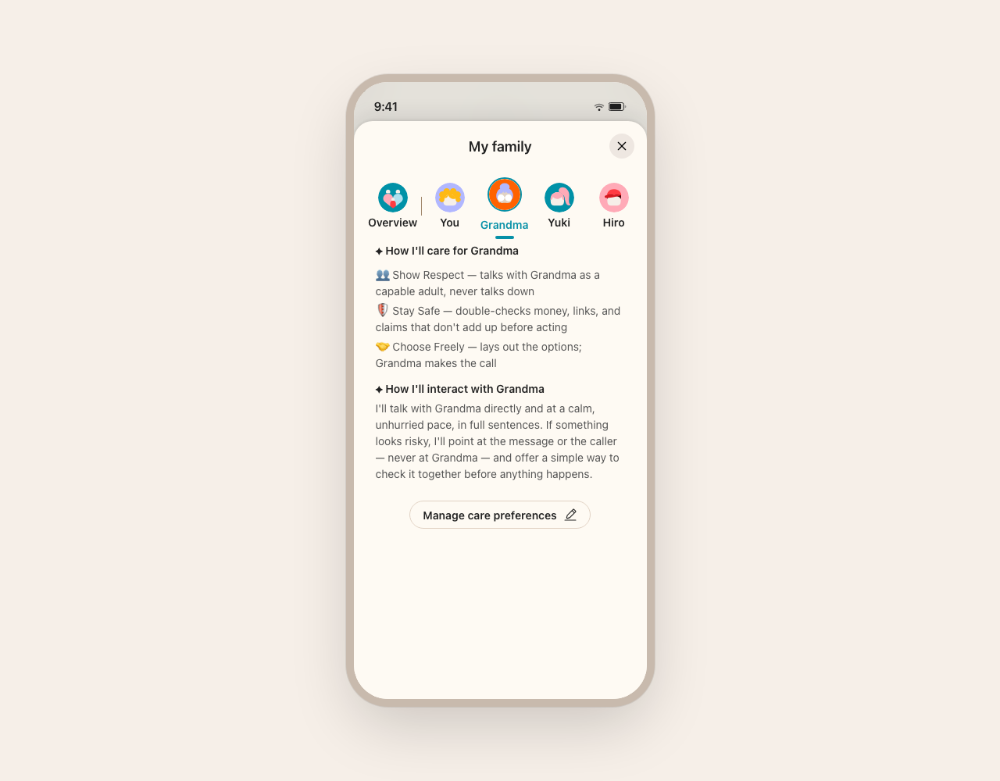

Show design notes
familyGraph-member · 設計師在交付上標注每個偏離 spec 的判斷
1
2
3
1每位家人獨立 care 設定，預設選 Grandma
why：照顧需求最高者先呈現，減少切換。
open Q：分頁順序依風險還是年齡？要請 PM 定。
2care values 拆成三原則敘事
why：Show Respect / Stay Safe / Choose Freely 比抽象條款好懂。
trade-off：親和敘事 vs spec 原本的功能條列。
open Q：PM 要保留 spec 原用語嗎？
3入口收斂成單一「Manage care preferences」
why：避免每個原則各放一個編輯鈕、降低認知負擔。
trade-off：簡潔 vs 可發現性（編輯要多點一層）。